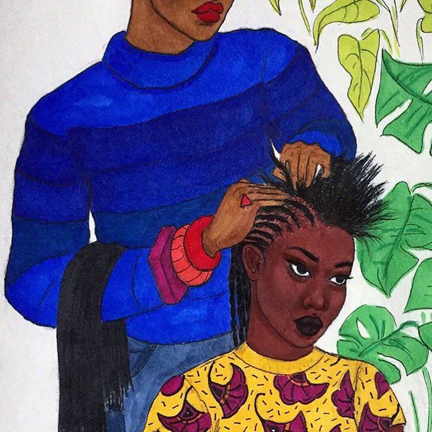
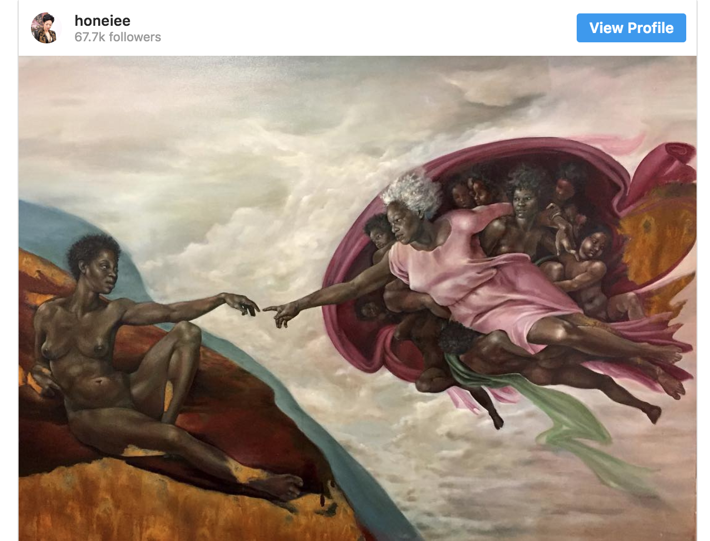
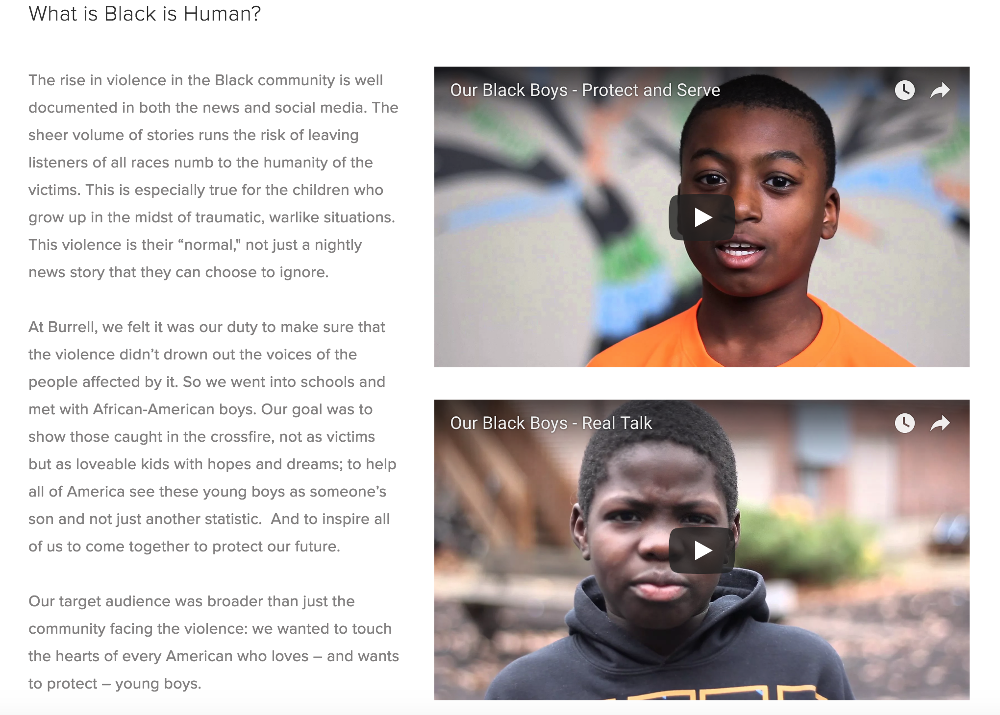
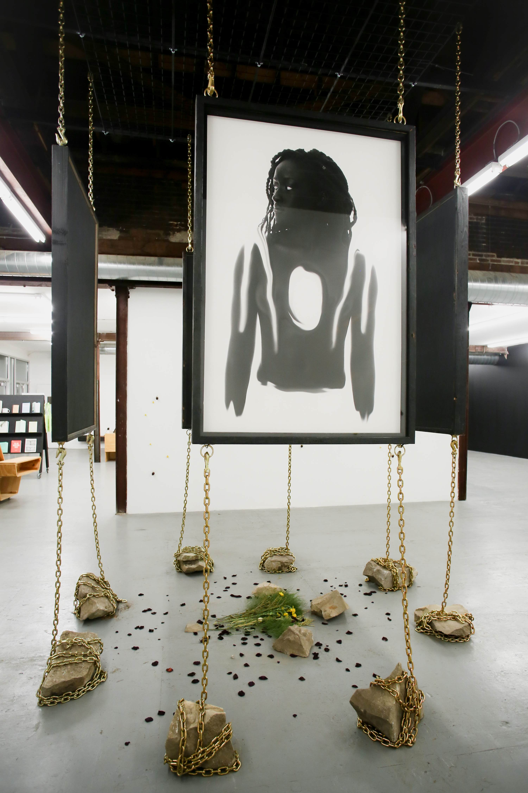
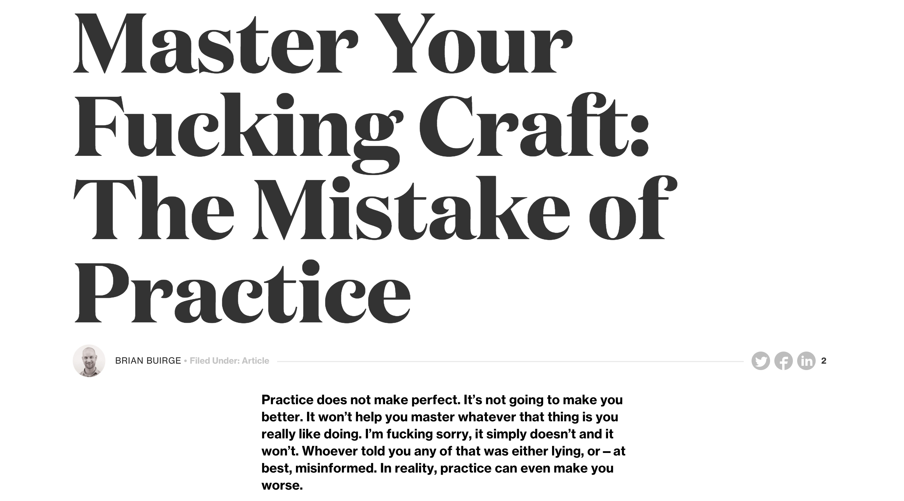

Reach for the Stars: ZeCora's Personal Artistic Goals
One of my goals is to learn how to truly let the concepts of my project fuel the way I work formally. I honestly believe I have really good ways of thinking conceptually I think it’s the strongest part of my work and I want my form to reflect that same thing. I also think it is important that I don’t limit myself in the beginning of my process and learn to produce and formulate many ideas and really consider them all as possible options because I think I get too caught up in one idea and I shut down at . the first sign of it not working out. Another goal I have is to discover my formal identity, discovering what do the things that I like to make look like. Conceptually I want to continue along the path that I am going in picking a certain type of content but I want to further that and really understand the content I picked instead of focusing on a surface level, I want to learn to fully understand my concept. A lot of the content I choose deals with black life, culture, history etc because I was also an African and African American Studies major and I want to be able to use both of my areas of expertise together to tell black stories and improve the quality of black lives. I think its important for me as a black artist to redefine what elevated art looks like outside of eurocentric norms and this is a life long goal that I am ready to commit too.
Be the Type of Person You Want to Meet: ZeCora's Creative Inspirations
Ben "Maty" Biayenda
I stumbled upon Maty Biayenda’s work while I was scrolling through twitter. It stopped me in my tracks. It reminded of illustrations I would see in my books growing up except the people in the images looked like me. I collect black children’s books for the subject matter but secondly for the illustrations so their work struck me immediately. However, they aren’t drawing children they are drawing people that look my age now and after learning that they are only 20 years old themselves I understand why. They are drawing directly from their surroundings and it is evident in their details and their inclusion of popular black cultural references such as the allusion to solange’s album cover. Their subject matter reminds me alot of my own but their way of making and drawing these images gives it the feeling of telling a story. These images feel as if they are telling their own story but my story as well and I think that is a beautiful thing for an artist to be able to capture. As a queer femme artist I think that Maty's ability to depict feminity in a way that is relevant to anyone whole holds that identity is striking and is doing important work of validating trans people and their experiences.
Harmonia Rosales
Harmonia’s work speaks to me because it is very similar to the type of work that I do in that I enjoy subverting what is already there. Her work reminds me of the piece I created for my Painting Elective which is a scene of a woman in a strip club that is modeled after Le Follie Bergere. Taking classical art and subverting it is a strong visual interest of mine just as well as distorting societal norms in order to function as a sort of mirror that simultaneously criticizes and levels the playing field. Recently in my Art as Activism course I learned that this follows a technique coined by Guy Deborg and the Situationist called “detournement”. Interestingly, I think detournement is something that I’m noticing shows up in various artists work and in black artists work I see it most often. Because of the way society places white people, white art, and anything white as the “norm” black artists do alot of reimagining these as black spaces or people. The act of taking a major white charchter for example and recreating it as a black person or person of color gives that charachter an entire new meaning while forcing people to think critically about the motivations of the artist and what exactly they are trying to say.
Rell Brodie
I have a friend, Rell Brodie, who often employs detournement by recreating well known black figures or movie scenes as anime charachters. I view this as a critique because until recently black people who watched anime were marginalized and bullied for this interest. He also portrays black figures in these anime worlds which is intriguing as anti-blackness is rampant in asian culture and anime is a Japanese form of drawing and animation. By taking both of these worlds and forcing them to cross over and co-exist he uses detournement to rethink a new world and challenge the current status quo.

Murjoni Merriweather
I stumbled across Murjoni’s work on twitter one day as I often do and it captivated me because of the juxtaposition of these black figures and the medium of sculpture. In art history there were close to zero sculptures that were of black con- tent, subject, or creation. Sculpture was relegat- ed to the elite of high white society. Because to have your body be cast in a permanent medium such as this is to immortalize you, it allows one to transcend life in a way. So we often see only those deemed “most important” frozen this way via statues or busts in museums. I think Mur- joni’s work takes black bodies and shows that we are just as important, just as valuable, just as worthy as every one else. I think this sticks out to me because this is something I also aim to do with my work. Many people ask why I got into design and its because of my will to change the messages (whether overt or covert) that surround black bodies and black life in society today.

The Burrell Agency
The Burrell Agency interested me because it is the first black owned ad agency I have ever come across. They market themselves as “transcultural, multidimensional” those are the first two words you see upon entering their site. After looking at the work that they do and seeing things that are very culturally relevant to my life and ads that are very representative of the world around us I wanted to see who all worked there. The staff is diverse and it's diverse in a multitude of ways from age range, to race to their different specialties and interests. Exploring this agency has made me excited because before I thought that I should just abandon the idea of working in an ad agency completely because it would be dominatned by white cis-gender men and I refuse to keep putting myself in those spaces, but knowing that I have other options is a relief.
Jen Everett
Jen’s work makes me think about ownership. The idea of found photography and found objects has always intrigued me. I think that there is something so fascinating behind taking images that one has no context to and creating a story from them. But i also wonder at what point and how do we know what is okay to use and incorporate into one’s own work as found photography and claim as one’s own. Is an image found in an old family photo album that ur great great great aunt took one day and finding an image that a professional photographer took in the 60s equivalent? Where does the line of ownership exist in these two photgraphs? By ripping it in two and layering other images on top digitally does it become something totally new or does it simply change the thing for me as an artist Jen’s work really makes me think about methodologies and ways of working as an artist.

Damon Davis
Damon Davis’s Darker Gods exhibit was a way of leaning into some of the tropes of blackness we commonly see in today’s culture. Black people are often seen as inhuman whether it be being described as, “a demon” by the man who shot and killed you, or depicted as superhumans who need powers just to get through the daily struggles of being black in america. Davis’ pushes this latter idea into the highest realm of the supernatural, by depicting these images of black bodies as Gods. I think one of the most interesting things for me about this exhibit was how intentionally he was in creating it inside the Luminary. The Luminary has a very large windows in the front of the building that allow people to be able to look inside and it is located on cherokee street a place that has a large population of young black kids and I believe Davis’ choice to show this in this place speaks to this idea of empowerment that he mentions below in his artist stamtent. Art is one of those things that people don’t realize has an impact on them till later down the line I feel like so for him to make sure that black kids in the area can see this images of black bodies being raised to the highest level in a society where they are con- stantly being put down as other speaks volumes to his intentions in his work.
Sarah Paulsen
The Invention of Whiteness by Sarah Paulsen was an amzing exhibit and it drew me because of the subject matter but also her methods of making. When creat- ing these short animated clips she did a lot of research and working in archives which I thought was really interesting becauses society thinks that artists pull this ideas just right out of there heads and boom they land in the museum but in reality they require alot of working through and teasong out and considering of multiple variables in order to get their message across. I think Sarah does a great job at this and her medium and intentionality in the installation of the exhibit all worked really well together to allow it to be digestible. On Whiteness, explore what whiteness in america is and its provocative because she is a white woman making this work and many people do not think of “Whiteness” as a thing. But sarah tackles this constructed instituition by looking at her own life as well as popular culture, history and media. She also included in her exhibibt poetry from people of color that was in direct response to her exhibit that shows her under- standing of whiteness as constructed in relation to other identities but simultaneously affirms that this exhibit was for everyone and while each person will experincce it differently each person stands to gain somerthing. I wanted to include this exhibt because i think Sarah does a wonder- ful job of getting her point across in a nuanced and multilayered fashion.

Good Fucking Design Advice
My professor, Penina introduced me to this website and honestly I think it’s changed my life. I am not sure what they would categorize themselves as but I see two creatives who are working to help other designers rise to their full potential, while also making some pretty dope merch. I value their authenticity, their boldness and their work. The tone of the website feels as if your bestfriend is giving you that much needed kick in the keister with love and profanity, two of my favorite things. I also read some great articles on the site that really gave me perspective and forced me to think about myself as a creative, artist, and designer. I also downloaded a great new wallpaper!
